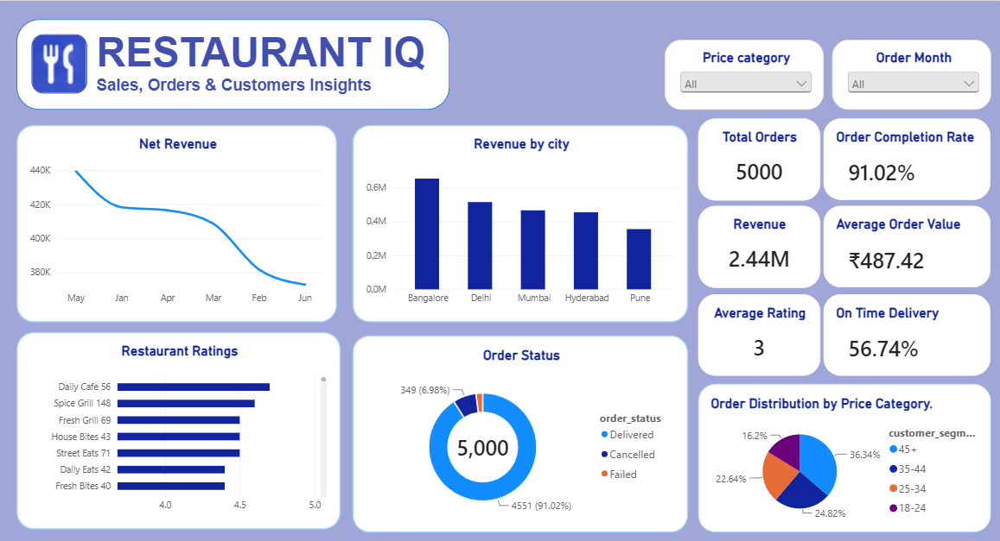
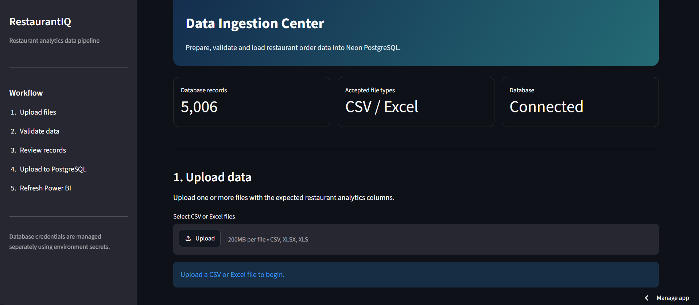

Revenue & Order Trends
Total revenue, order volume and average order value segmented by city, restaurant and time period.
RestaurantIQ is a deployed analytics platform: upload CSV or Excel files through the Streamlit portal, validate and store records in Neon PostgreSQL, and explore results through an interactive Power BI dashboard.
Orders, ratings, revenue and operational records often live in separate files across different teams. Before useful analysis can happen, the data has to be validated, deduplicated and loaded into one central location.
RestaurantIQ turns that messy process into a repeatable, end-to-end analytics workflow — from file upload to interactive dashboard.
Two deployed applications — one for data ingestion, one for analytics. Both are live and working today.
Interactive analysis of restaurant revenue, order trends, city-level performance, ratings, order status breakdowns and price category patterns. Built with DAX measures and interactive slicers for drill-down exploration.
Power BI uses Import mode. New database records appear in the report after the dataset is manually refreshed.

Upload CSV or Excel files, combine compatible datasets, validate the expected schema and column types, check for duplicate order IDs, and insert new records directly into Neon PostgreSQL.
Open Data Uploader ↗
Five steps — three automatic, two user-triggered — take data from CSV upload to an updated Power BI report.
Open the Streamlit portal and upload one or more compatible CSV or Excel files. Multiple files can be combined in a single session.
Python and Pandas merge compatible files, verify expected column names and data types, and flag any rows that fail validation before proceeding.
The portal cross-references incoming order IDs against records already in the database and surfaces any duplicates so they are not re-inserted.
New, validated records are written to the Neon-hosted PostgreSQL database — the central source of truth for the entire platform.
Trigger a dataset refresh in Power BI Desktop or the Power BI Service. The dashboard then reflects the latest records from PostgreSQL.
The platform separates ingestion, processing, storage and visualization so each layer can be understood and improved independently.
Source files uploaded by the user
Upload UI, drives the ingestion flow
Validates schema, deduplicates, prepares records
Cloud-hosted relational database
Import mode, DAX measures, dashboard refresh
Power BI connects to PostgreSQL using Import mode. New records become visible in the dashboard after the dataset is manually refreshed — either in Power BI Desktop or through the Power BI Service. The pipeline is not real-time and does not refresh automatically on a schedule.
The dashboard covers the metrics a restaurant operations team would actually want to explore, with slicers and filters for interactive drill-down.
Total revenue, order volume and average order value segmented by city, restaurant and time period.
Revenue contribution and order volume across cities to identify geographic performance differences.
Average ratings per restaurant and distribution of rating scores across the dataset.
Proportion of delivered, cancelled and pending orders with interactive slicer filters.
Order volume and revenue broken down by price category — budget, mid-range and premium segments.
Metrics in the dashboard reflect data loaded into the PostgreSQL database and are updated when the Power BI dataset is refreshed. No figures on this page represent live production statistics.
Each technology is responsible for a specific layer of the platform.
Visit the Streamlit portal, upload a compatible CSV or Excel file, and watch the validation and deduplication steps run before records are written to Neon PostgreSQL.